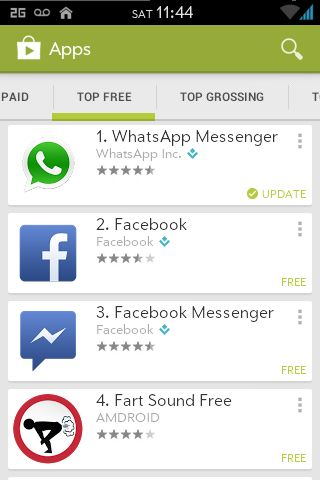
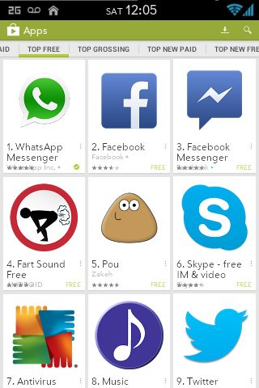
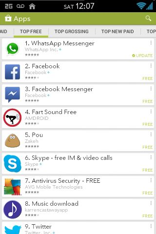
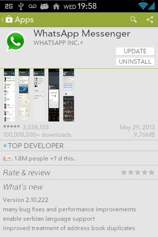
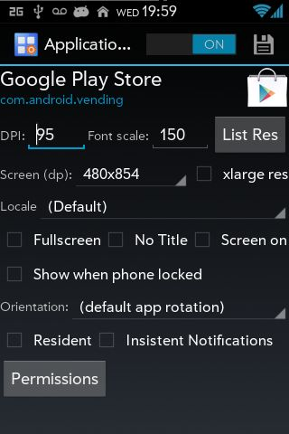

Android: dpi por app
Todos sabemos que Android tiene sus problemas, que Google los esta tratando de mejorar poco a poco. Todos sabemos que Google tiene servicios copados gratuitos. Y todos sabemos que Google dejó de lado las interfaces hechas por ingenieros1 y contrató diseñadores. También sabemos que están tirando a la interfaz flat/minimalista, que no es fácil de dominar para que quede apetecible a los ojos.
¿A que voy con esto? Al "moco" que se metió al actualizar la Play Store. Acá te refresco un poco:

En las tablets no es tan mala. En los celulares con mucha resolución creo que tampoco. El problema va con los celus con poca resolución2, como el mío (LG Optimus One (p500)).
¿Cómo arreglar esto y dejar la Play Store mas usable? Cambiando el DPI. ¿Cómo arreglar el DPI? La opción mas popular es instalando Paranoid Android (me encanta el loguito). Cambiando a esta ROM, podes cambiar el DPI por programa (cambiar el color de la status bar y nav bar, otras cucherías pero no viene al cuento). La había probado (por otras razones) pero en mi celu era muy lenta y no daba dejarla solo para cambiar el DPI por uno o dos programas.
Dejé de lado esto hasta que encontré otra forma navegando por ahí: instalando el Xposed Framework y el Per App Settings Module 3. Esto es algo asi como "instalo esta app y este módulo, y puedo cambiar el dpi :D".
Es fácil de usar. Solo tenes que buscar la app que queres toquetear, le pones el "on", toqueteas, ponés guardar y reinicias el programa. Listo. Cambios hechos.
Jugando, llegué a poner así la Play Store:

De cuatro pobres opciones a nueve. Mucho mejor, pero eso de los cuadraditos no me gustaba mucho4, asi que lo cambié a lista:

De los 4 originales a 8.5. Nada mal y sigue usable. Eso si, no todo es color de rosas, porque donde te muestra la info + capturas de pantalla + descarga + comentarios + +15 + etc. (las capturas) se ven medio deformes:

Y, obviamente, al cambiar el DPI por programa, por lo menos en un celu como el mío, tarda unos segundos (contados) en abrir o cambiar de pantalla, pero puedo vivir con eso.
Si quieren saber los datos que usé para la Play Store, para que se den una idea:

También "mejoré" la app de DropBox (ahora me entran mas carpetitas en la vista), Contactos, gMail (que no lo uso en el celu, pero queda linda la tablet UI) y la cámara. Si quieren mejorar ésta última, y si usan Android 4.16 o superior, por alguna razón, el señorito Google unió la cámara con la galería, y tienen que modificar esa.
Asi que si, no necesitan cambiar de ROM para cambiar el DPI por programa. Instalen lo de arriba y PUM. Listo.
-
y con eso me refiero a los que no les importa el diseño y se centran en la funcionalidad. Como eran antes los productos de Google. ↩
-
usualmente los de gama media-baja/antiguos/los de menos de $1500 ↩
-
<3 xda developers ↩
-
En realidad, me gustaba pero los iconos eran muy grandes, lo cambié y después me olvidé de cómo habia puesto los cuadraditos. ↩
-
Maldito Google+ ↩
-
JellyBean para los amigos ↩
How to comment
- Tweet with an URL to this post (
http://blog.quinzi.com.ar/android-dpi-app/) - Write a post linking here and send me a Webmention.
- Commenting with disqus